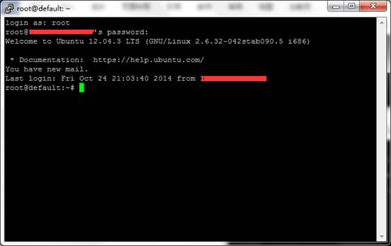

需要对linux有简单的了解，会使用简单的命令
我做这里的步骤时也有很多不懂，于是百度，谷歌，找人请教，终于走通了，哈哈。
网页：
服务器：Linux + nginx ，客户机:windows7
域名：
建立一个本地网页，很简单（http://www.w3school.com.cn/html/index.asp），类似如下内容，复制到记事本中，保存为 测试.html,使用浏览器打开
内容：
效果：
但是这个网页只能在本地浏览，如何能在外部网上也能浏览呢？
要将我们做好的网页能在万维网上直接看到，需要把网页文件放到服务器上，经过一系列的配置（租服务器就需要付费了），这里服务器已经安装好nginx，看看这部分的原材料：
服务器IP地址：以下用 200.200.1.10
用户名：root
密码：testmima
端口：28565
连接服务器：下载putty.exe 和 psftp.exe (http://www.chiark.greenend.org.uk/~sgtatham/putty/download.html)
都是绿色的，直接可以用
先把网页上传到服务器
Windows中执行cmd，定位到psftp.exe所在文件夹
大写P要注意，而且要在文件加下执行。
回车之后，登录成功的话，就进入root的命令行
下面一次解释命令的意义
//进入 usr文件夹
psftp> cd /usr
Remote directory is now /usr
//创建test文件夹
psftp> mkdir test
mkdir /usr/test: OK
//上传d:\desktop\test.html（本机路径） 到/usr/test/test.html（目标路径）
psftp> put d:\desktop\test.html /usr/test/test.html
local:d:\desktop\test.html => remote:/usr/test/test.html
至此，文件上传完成。
接下来设置访问路径

如果出现以下错误
解决方法：
1.vi /etc/ssh/sshd_config 将PermitRootLogin的注释取消，或者将no改为yes。
2.service sshd restart
3.setup命令进入将防火墙关闭。
以上是网上搜索的，可是没有用，因为我…..端口号输入错了 -_-! 如果你也出现这种情况，请检查一下自己的端口号~
输入用户名root和密码，密码直接输完，界面上不会显示

输完后回车
输入远程机上的nginx配置文件的路径
这里我们需要配置成这样
如果一个ip地址要对应不同的网页就需要配置多个server
按Esc退出编辑 :wq 保存编辑退出，然后重启 nginx，是配置生效
nginx –s reload 回车
在IE里面输入 200.200.1.10 就会出现测试界面（好吧，这张是我PS的 -_-!!）
有时候你会抱怨，我擦，这一堆一堆的数字，谁记得住，为什么不能取点有意义的名字呢？恩恩，这个时候，域名闪亮登场，可以理解域名是目标ip地址的别名，比如我们常用的www.baidu.com 它是115.239.211.110的别名，在IE里面输入两个地址，都能跳出百度的网页，那么，我也想要一个，请往下看：
Ok 大功告成，有些域名解析需要几个小时才能生效，so，等等，然后惊喜就会出现了